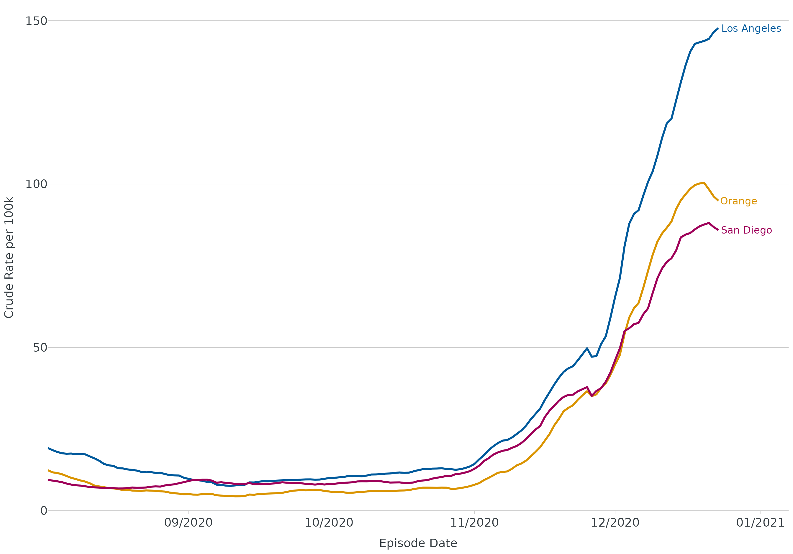
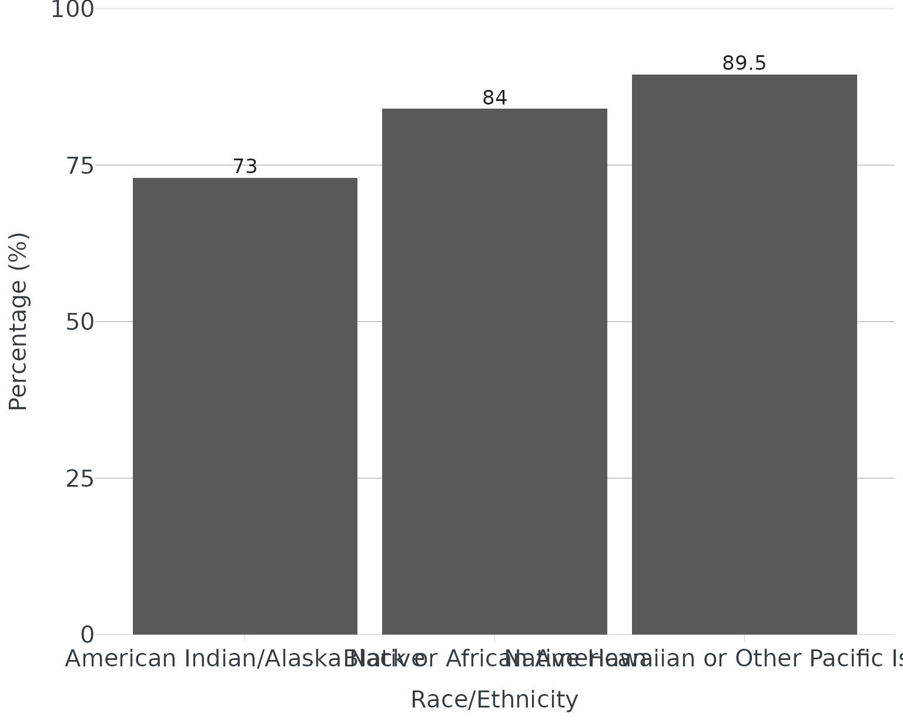
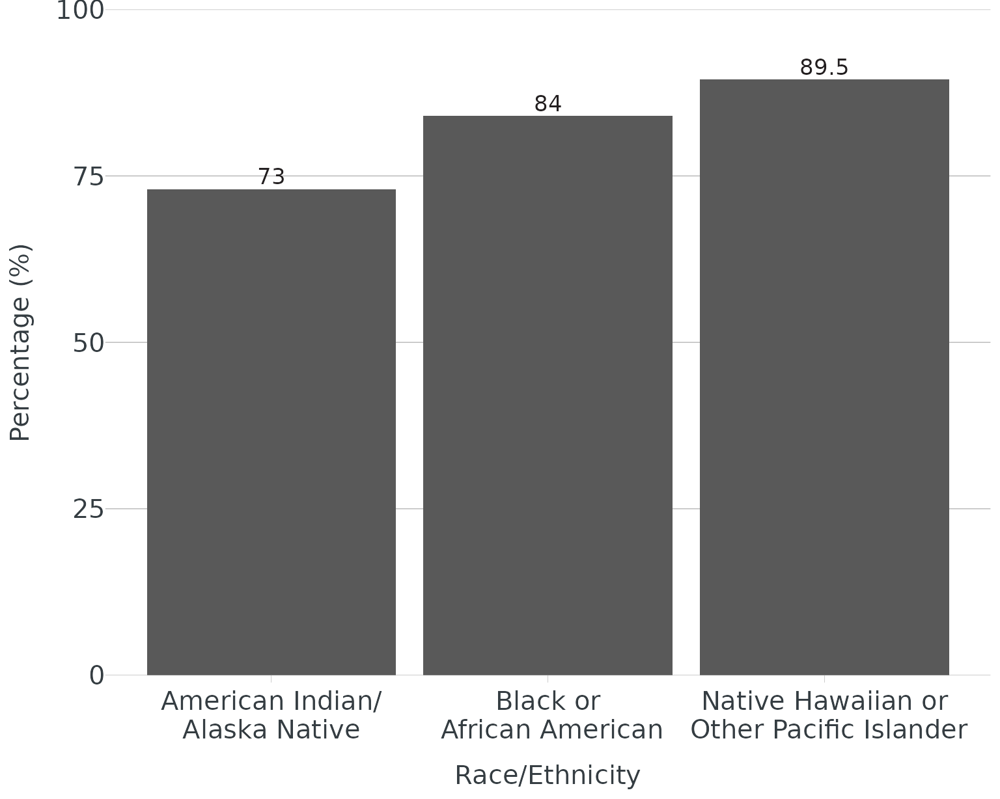

extending-ggplot2
extending-ggplot2.RmdThis article will demonstrate the different ways we extend ggplot2 through themes, colors, and labels.
theme_apollo() & apollo_label()
Using the built-in linelist dataset, we’ll build a plot using our theme, labels, and colors:
dis_x <- linelist
dis_x |>
mutate(age_groups = age_groups(Age, type = "hcv")) |>
count(age_groups) |>
ggplot(aes(x = age_groups, y = n)) +
geom_bar(stat = "identity", fill = cdcd_color("dodgers")) +
theme_apollo() +
apollo_label(aes(label = n), vjust = -0.3) +
scale_y_continuous(expand = c(0,0), limits = c(0,50)) +
labs(
title = "Disease X by Age Group",
subtitle = "PHS/Communicable Disease Control",
x = "Age Group (years)",
y = "Total Cases",
caption = "*This is a caption."
)For horizontal plots or maps, update
theme_apollo(direction = "horizontal") or
theme_apollo(direction = "map") respectively.
end_points()
For line plots with >1 group, it is recommended to direct label
groups. end_points() will subset the data to the last date
in a time series, even if groups end at different dates (thank you Butte
County for the suggestion).
covid <- read.csv("https://data.chhs.ca.gov/dataset/f333528b-4d38-4814-bebb-12db1f10f535/resource/046cdd2b-31e5-4d34-9ed3-b48cdbc4be7a/download/covid19cases_test.csv", na.strings = "", stringsAsFactors = FALSE) |>
filter(area %in% c("Orange","Los Angeles","San Diego"))
covid <- covid |>
group_by(area) |>
mutate(
date = as.Date(date, "%Y-%m-%d"),
rate = rate_per_100k(cases, population, digits = 1),
rate_ma_7 = round(zoo::rollmean(rate, k = 7, align = "right", na.pad = FALSE, fill = 0), digits = 2)
) |>
ungroup() |>
filter(date <= "2020-12-23", date > "2020-08-01")
ggplot(data = covid, aes(x = date, y = rate_ma_7, color = area)) +
geom_line(linewidth = 1.2) +
theme_apollo(legend = "Hide") +
geom_text(data = end_points(covid, date = date), aes(label = area), hjust = -0.05, show.legend = FALSE, size = 4.5) +
scale_x_date(date_labels = "%m/%Y", date_breaks = "1 month", expand = expansion(add = c(0,15))) +
scale_y_continuous(expand = c(0,0), limits = c(0,155)) +
labs(
x = "Episode Date",
y = "Crude Rate per 100k",
color = "County"
) +
scale_color_manual(values = cdcd_color("dodgers","mustard","london pink"))
wrap_labels()
For categories with long titles (e.g. race/ethnicity), you may need
to wrap text to better fit under/next to the axis. Functions like
scales::label_wrap() are very useful in wrapping long
labels via width argument. Our function will wrap label at whatever
delimiter you specify (e.g. or, forward slash, hyphen, etc.)
Without wrapping:
re <- data.frame(group = c("Native Hawaiian or Other Pacific Islander","Black or African American","American Indian/Alaska Native"), score = c(89.5, 84, 73))
ggplot(data = re, aes(x = group, y = score, label = score)) +
geom_col() +
theme_apollo() +
scale_y_continuous(expand = c(0,0), limits = c(0,100)) +
labs(
x = "Race/Ethnicity",
y = "Percentage (%)"
) +
apollo_label(vjust = -0.3)
With wrapping:
ggplot(data = re, aes(x = group, y = score, label = score)) +
geom_col() +
scale_x_discrete(labels = wrap_labels(delim = c("or","/"))) +
theme_apollo() +
scale_y_continuous(expand = c(0,0), limits = c(0,100)) +
labs(
x = "Race/Ethnicity",
y = "Percentage (%)"
) +
apollo_label(vjust = -0.3)
highlight_geom() & desaturate_geom()
When making data visualizations, emphasizing data points through
highlighting/fading may help the viewer see the take home message.
{OCepi} providers two ways to do this: highlight_geom() and
desaturate_geom(). highlight_geom() requires
two basic arguments - 1) an expression (similar to what you’d use in
dplyr::filter()), and 2) a color for highlighting. Although
sensible defaults are built-in, the following additional arguments
within highlight_geom() can be customized:
- size (
geom_point()) - linewidth (
geom_line(),geom_sf())
Please note: the default fade color/fill for
highlight_geom() is light grey (#cccccc). To override, add
fill/color to geom_*
(e.g. geom_line(color = "black").
desaturate_geom() requires the same two basic arguments
as highlight_geom() plus desaturate (range
0-1, 1 highest level of desaturation). Instead of fading non-emphasized
categories to gray, they will retain color but be desaturated. Options
to customize include:
- size (points)
- linewidth (
geom_line(),geom_sf())
Both highlighting approaches work with facet_wrap() and
facet_grid(). Currently works with
geom_col()/geom_bar(),
geom_line(), geom_sf(), and
geom_point(). Please note: your labels will be highlighted
if you place the text/label function before the highlight/desaturate
function. If you don’t want your labels highlighted, placed labels after
highlight/desaturate function.
Bar - Highlight
tbl <- linelist |>
mutate(age_groups = age_groups(Age, type = "enteric")) |>
count(age_groups) |>
mutate(
percent = add_percent(n, digits = 1),
label = n_percent(n, percent, reverse = TRUE)
)
ggplot(data = tbl, aes(x = age_groups, y = percent)) +
geom_col() +
apollo_label(data = tbl, aes(label = label), vjust = -0.3) +
highlight_geom(percent == max(percent), pal = cdcd_color("london pink")) +
scale_y_continuous(expand = c(0,0), limits = c(0,32), label = scales::label_percent(scale = 1)) +
theme_apollo() +
labs(
x = "Age Groups (years)",
y = "Proportion (%)"
)
Line - highlight
ggplot(data = covid, aes(x = date, y = rate_ma_7, group = area)) +
geom_line(linewidth = 1.2) +
theme_apollo(legend = "Hide") +
apollo_label(data = end_points(covid, date = date), aes(label = area), hjust = -0.05) +
highlight_geom(area == "Orange", pal = cdcd_color("orange")) +
scale_x_date(date_labels = "%m/%Y", date_breaks = "1 month", expand = expansion(add = c(0,15))) +
scale_y_continuous(expand = c(0,0), limits = c(0,155)) +
labs(
x = "Episode Date",
y = "Crude Rate per 100k",
color = "County"
)
#> Ignoring unknown labels:
#> • colour : "County"
Shapefile/Map - desaturate
base_zip <- oc_zip_sf
ggplot(data = oc_zip_sf) +
geom_sf() +
desaturate_geom(Zip %in% c(92702:92708), pal = cdcd_color("dodgers"), desaturate = 0.75, linewidth = 0.5) +
geom_sf_text(data = base_zip, aes(label = Zip)) +
theme_apollo(direction = "map")